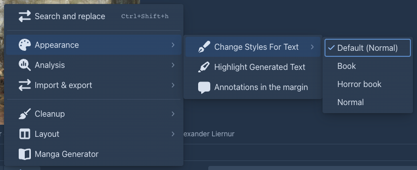
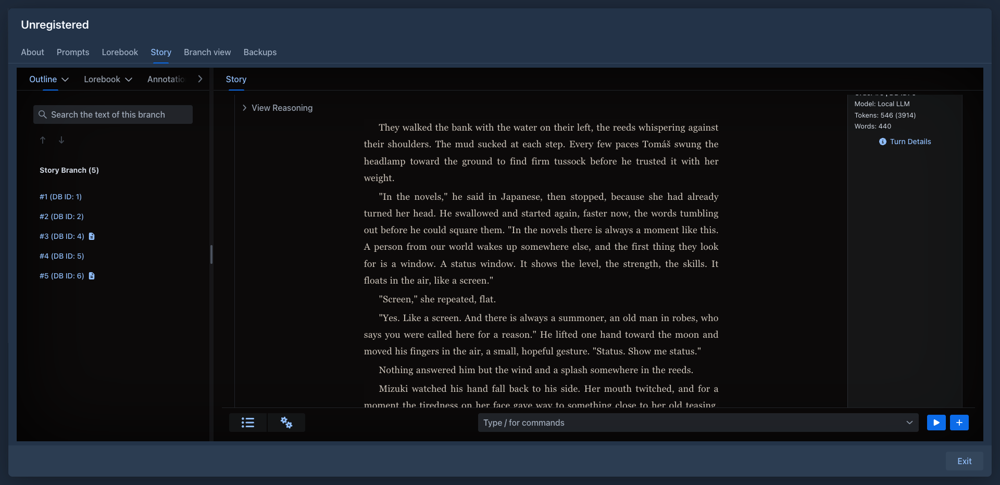

Styling guide: make your book look like your book
A text style decides how the text of your parts looks: the font, the colors, the width of the column, the headings, the line between scenes. This guide takes you from the first change to a finished look, and ends with a complete example to download: a style for a horror book that uses every option and some CSS of its own.
Where a style is used:
Make your first style
-
Open Settings → Styles (the Styles tab).
-
Select Book in the list and press Duplicate. The built in styles can not be changed, so you always start from a copy named Book (copy). Give it a name.
-
Change a few boxes on the Options tab. The Preview under the form shows a sample text (a chapter title, emphasis, a quote, a scene break, a smaller heading) and follows every change as you type.
-
Press Save of the settings. Nothing is stored before that, and Discard Changes throws the work away.
-
In the story editor open the settings menu (⚙) → Appearance → Change Styles For Text and tick your style. It is stored in the book. To use the style for all your books, select it in the list and press Set as default.

A box left empty keeps the look of the application, so a style only says what you want different. A style with every box empty is the plain look.
The options
Every box takes a CSS value. Units you will use: rem (the size of the text of the page, 1rem is normally 16px), em (the size of the
current text), px, %, and colors as #336699, rgb(51, 102, 153) or a name such as ivory.
Text
Page
Emphasis, links and code
Quotes
Headings
Scene break
A line with --- in the text is a break between scenes. By default it is three dots. Scene break text is what is shown instead
(* * *, ~, † † †), Scene break color its color.
Custom CSS
The options cover the common things. For the rest, the Custom CSS tab takes CSS of your own, added after everything else and applied only inside the style. Two ways to write it:
-
Plain declarations apply to the whole area that holds the text:
box-shadow: inset 0 0 120px rgba(0, 0, 0, 0.8); -
Rules with a selector. Write them with
&(the area of the style) in front, or without it: either way they only reach text that has this style.& .chat-message-markdown h1 { text-shadow: 0 0 12px #8e1b17; } & .chat-message-markdown a:hover { color: #b3261e; }
The text of a part sits in an element with the class chat-message-markdown, so a selector for something in the text starts there. The
Generated CSS field under the CSS box shows the stylesheet the options make: copy its selectors to see what you can override.
Things to know:
-
The braces
{ }must match, or the style is refused when you save. Comments/* ... */are fine. -
A few rules the application needs are
!important(the text never gets wider than its area, long words wrap, paragraphs keep their line breaks). Your CSS can not override those; it can override everything else, because it comes last. -
CSS can change how things look, not what they say. It does not reach the toolbars and tabs around the text.
-
Custom CSS is used in the story, the reader and HTML exports. EPUB, PDF and Word do not take it.
What the exports take
A style for exports is chosen in the export dialog; Duplicate a style and tick For exports, or start from one of the four the application brings. Colors that depend on the theme of the application (the light text of the dark theme) become dark ones for a white page when exporting.
E-book readers often use their own fonts, sizes and colors whatever the stylesheet says. PDF and Word can only use the fonts the format has: the PDF chooses serif, sans or monospace from the stack you wrote; Word names the first font of the stack and shows its own if the computer lacks it.
Share a style: export and import
Under the list of styles, Export saves the selected style as a file (name.style.json; a built in style can be exported too) and Import
reads such a file. An imported style is added to your own styles as a new style, it is not stored before you press Save, and it keeps its
name, so rename it if you already have one like it.
The file is JSON:
It can hold several styles, and you can write one by hand. The options are named in capitals (FONT_SIZE, TEXT_COLOR, SCENE_BREAK_TEXT...); the
An example: a horror book
Download the horror style (horror-book.style.json), import it in Settings → Styles and select it
to see it in the preview. It sets every option and uses custom CSS for what the options do not cover:

To try it on a real text, paste this into a part (or the preview shows a similar sample):
# Chapter One: The House on Harrow Lane
The rain had been falling for *three days* when Mara found the door. It was not on the plan of the house, and it was **warm** to the touch.
> Do not open it after dark. — scratched into the plaster, in a hand that was not hers
She counted the steps down. Thirteen. At the bottom there were:
- a lantern, still burning;
- a chair, turned to face the wall;
- her own name, written in the dust.
---
By morning the lantern was out, and the [house records](https://example.com) said nobody had lived there for forty years.Then change it: make the background #14100c for a candle-lit brown, set Text width to 32em for a narrower page, or remove the custom CSS to see
what the options alone do. When you have a look you like, Export it and keep the file with your book.